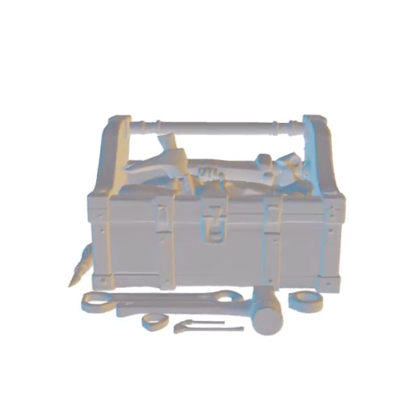

2.1 From an image to a usable 3D object
A robot sees a cabinet in an image. How do we turn that image into something it can open in simulation? We need to recover a shape, decide how to represent it, and give its parts rules for movement.
A photograph tells us which colors appeared from one camera position. It does not directly give the cabinet’s depth, the shape of its back, or the space inside its drawer. Many different 3D objects could produce a similar front view.
Reconstruction tries to recover the particular object or scene in the observations. Photos from several viewpoints help reveal depth and hidden surfaces. Generation uses patterns learned from other objects to create a plausible asset from a prompt or image. With one image, those learned patterns can help fill in unseen regions, but a plausible interior is not necessarily the real interior.
These are different levels of information. A beautiful cabinet may still be one fused shape. Separate drawer and body shapes may still have no rule saying that the drawer slides. Even a sliding drawer needs physical properties before we can calculate what a pull will do.
This progression—from whole shapes, to parts, to parts with motion—is also the organizing idea in SPARK’s related work. We will first understand the shape and appearance, then connect them to simulation.
The full path: a picture, a 3D model, and a new picture
Suppose we start with a picture of a cabinet and want to see its other side. We first need a 3D version of the cabinet. We can then put a virtual camera beside it and make a new picture.
- Input images
What the original camera saw.
- Reconstruct or generate
A method estimates a 3D object or scene.
- Store the 3D result
For example, a mesh, 3D Gaussians, or a learned field.
- Render from a camera
Calculate what is visible from a chosen viewpoint.
- A new 2D image
The same 3D result, seen from that viewpoint.
Three examples of this path
TRELLIS
Input: one image.
Create: a pretrained generator proposes the object’s 3D form.
Save the 3D scene: a mesh or 3D Gaussians, among its supported outputs.
Render a 2D image: draw the mesh surfaces, or project and blend the Gaussians.
Original 3DGS
Input: photographs of a scene from several views, with estimated cameras.
Create: adjust Gaussians until their images match those photos.
Save the 3D scene: positions, shapes, opacity, and appearance of the Gaussians.
Render a 2D image: project and blend them into an image.
Original NeRF
Input: photographs of a scene from several views, with known camera poses.
Create: train a network until its images match those photos.
Save the 3D scene: the trained network’s weights.
Render a 2D image: query the network along lines of sight and combine its answers.
These are alternative routes. TRELLIS can infer unseen sides from its prior training; the original NeRF and 3DGS methods fit one observed scene. A convincing new view does not by itself prove that the hidden geometry is correct. Sources: TRELLIS, 3DGS, and NeRF.
How rendering helps us build the 3D model
Building a 3D model and rendering an image are opposite directions, but they work together. If we have a candidate 3D cabinet, we can draw it from the same viewpoint as an input photo. Comparing the two images tells us how well the candidate explains what the camera saw.
Use photographs to construct or adjust a 3D representation.
Make a picture from a known camera view. During fitting, compare it with the photograph to check the current estimate.
For example, if the rendered handle appears too far left, its 3D position may need to change. Other camera views help distinguish a sideways error from a depth error. Repeating this process is one way to learn a scene from images.
The original NeRF and 3DGS methods take photographs of one particular cabinet. They repeatedly adjust their 3D version of that cabinet until its rendered views resemble those photographs.
An image-to-3D system such as TRELLIS has already been trained using many different objects. When we give it a new cabinet photo, it uses what it learned to propose a 3D cabinet, including surfaces hidden in that photo. This prior training is what “pretrained” means.
For example, TRELLIS can produce a mesh of the cabinet: its shape stored as connected surface patches. It can also produce 3D Gaussians: soft blobs positioned in 3D, which a renderer blends into images. TRELLIS names the system that creates the model; “mesh” or “3D Gaussians” describes the kind of data it produces. We will look at how each works below.
One image, two kinds of 3D output
Here is a toolbox example published by the TRELLIS authors. The input is one image; the other two pictures show views of the generated 3D outputs.
The output pictures use different display modes. The mesh picture shows the surface shape without the wood and metal textures. The Gaussian picture includes the generated appearance. This difference in presentation can make the Gaussian result look more finished.

Input image
A single 2D picture.

Mesh · shape view
The surfaces, with the wood and metal appearance omitted.

Gaussians · appearance view
The generated colors, blended into an image.
A mesh can also show wood grain and shiny metal. Its surfaces can carry textures and materials. In fact, the TRELLIS authors also export meshes with appearance transferred from the Gaussians. These pictures therefore do not establish that one representation produces better-looking images. TRELLIS explains its display modes and textured mesh exports.
Images: TRELLIS authors’ image-to-3D gallery. Their input image was generated with DALL·E 3. The two output views are frames from the same published example.
Why would we choose a mesh?
Suppose we want a robot to grasp the toolbox handle. We need to locate the handle’s surface and the gap behind it, edit the shape if necessary, and prepare shapes for contact. A mesh gives us explicit surface patches to work with. We can also organize its geometry into parts before adding joints and physical properties.
If our immediate goal is to reproduce the look of a photographed scene from new viewpoints, 3DGS is designed for that rendering task. Its colored blobs can capture appearance without first building a connected surface. The choice depends on what we want to do with the result; surface geometry and Gaussian appearance can also be used together. Original 3DGS project.